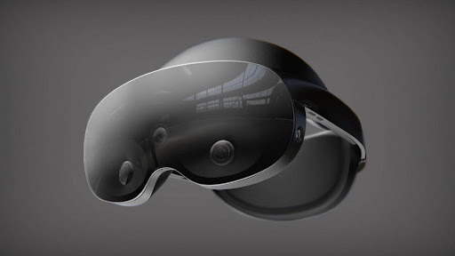
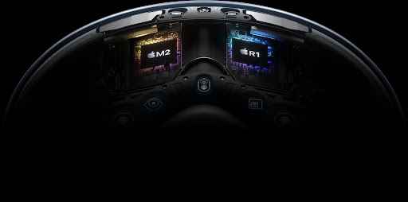

We're
living in an era where buzzword technologies like Virtual Reality (VR) and
Mixed Reality (MR) are not just enhancing our gaming experiences but are
branching out and making waves in everything from education to healthcare.
Talking about VR and MR, two big names are leading the charge - Meta with their star player, the Meta Quest Pro, and Apple, changing the game with their Apple Vision Pro.
Both these companies
are competing to transport us to incredible digital worlds with immersive and
interactive experiences like never before.
In this blog post, we will explore the intricate details of these two captivating devices, comparing them extensively, ranging from their features to their potential for the future.
Whether you're a passionate gamer yearning for a heightened level of immersion,
an innovative professional considering VR or MR for your upcoming project, or a
tech enthusiast (like ourselves) who thrives on being at the forefront of
technology, this showdown is precisely what you've been looking for!
Ready to strap in for this
virtual voyage? Let's get this show on the road!
Apple Vision Pro vs Meta Quest
Pro
As the demand for VR experiences
continues to grow, these two major players in the tech industry are constantly
pushing the boundaries to offer the most advanced and user-friendly VR
platforms.
Here is a head-to-head comparison between Meta Quest Pro and Apple
Vision Pro, to help you understand their key features, capabilities, and user
experiences.
Hardware and Design
Feature |
Apple Vision Pro |
Meta Quest Pro |
Dimensions |
TBA |
10.3 x 7.1 x 5.0 (inches) |
Weight |
About 1 pound |
1.59 pounds |
The Meta Quest Pro showcases an
impressive all-in-one design that eliminates the need for additional devices or
cables. With its sleek and modern appearance, it immediately captivates the
user.
Meta has crafted this device with careful attention to detail, ensuring a
comfortable fit for extended VR sessions. Its lightweight construction and
ergonomic design make it easy to wear, reducing strain on the user's head and
neck.
It features adjustable straps
and a well-balanced weight distribution, providing a secure and personalized
fit for users of various head sizes.
The thoughtful design also includes
built-in speakers that deliver immersive audio, eliminating the need for
additional headphones.
Amazing. Right?
This streamlined approach allows
users to fully immerse themselves in virtual worlds without any external
distractions.
At the same time, Apple VisionPro boasts Apple's signature design ethos, characterized by a sleek and premium
build.
Designed to work seamlessly with Apple devices, it leverages the power
of iPhones or iPads as the display and processing units.
This unique approach
ensures that users can enjoy the benefits of Apple's ecosystem while delving
into VR experiences.
Furthermore, its minimalistic
design seamlessly blends with Apple's existing product lineup, creating a
cohesive and visually appealing ecosystem.
Being lightweight and compact in
form, it is portable and easy to carry, which allows users to enjoy VR
experiences wherever they go.
Display and Visual Quality


Feature |
Apple Vision Pro |
Meta Quest Pro |
Display resolution |
4K (per eye) |
1832 x 1920 (per eye) |
Display refresh rate |
90Hz |
90Hz |
Meta Quest Pro delivers an
exceptional visual experience with its high-resolution OLED displays. These
displays provide vibrant colors, deep blacks, and excellent contrast, resulting
in immersive visuals that bring virtual worlds to life.
The display resolution
of 1832 x 1920 (per eye) ensures sharp details and clarity, allowing users to
fully appreciate the intricacies of VR environments.
Not only this but with a fast
refresh rate, the Meta Quest Pro minimizes motion blur, creating smooth and
fluid movements.
This feature is particularly crucial for fast-paced VR games
and experiences, as it enhances the sense of presence and reduces the risk ofmotion sickness.
Not to Surprise, Meta Quest Pro's display quality contributes
to a captivating and visually stunning VR journey.
On the other side, indeed, Apple
never compromises with its display and that is why the Apple Vision Pro
leverages the display technology of iPhones and iPads to offer impressive
visual quality.
With True Tone and HDR support, the Vision Pro provides
accurate colors, enhanced brightness, and increased dynamic range.
This ensures
that the user’s VR experiences on the device are visually striking and true to
life.
Wait! There is more to tell.
Vision Pro's Retina display delivers sharp and detailed visuals, allowing users
to perceive fine details within virtual environments.
The high pixel density
offered by the custom micro-OLED display system ensures a smooth and seamless
viewing experience, while the advanced color calibration ensures accurate color
reproduction.
These features combine to create an immersive and visually
captivating VR experience.
Tracking and Controllers
Meta’s Device features inside-out tracking, utilizing
built-in sensors and cameras to track the user's movements and position within
virtual environments.
This means there is no need for external sensors or setup, allowing for a hassle-free and immersive VR experience.
The tracking system ensures accurate and responsive motion tracking, enabling users to interactwith virtual objects and navigate virtual spaces with precision.
The Meta Quest Pro also comes
with intuitive and ergonomic controllers that offer a natural and intuitive way
to interact with virtual environments.
These controllers feature responsive
buttons, triggers, and joysticks, providing tactile feedback and enhancing the
sense of presence.
With six degrees of freedom (6DOF), users can freely move
and manipulate objects within the virtual world, making interactions feel
lifelike and immersive.
Well, Apple is also not stepping
back in the motion-tracking game. Its new launch, utilizes tracking
capabilities, leveraging its onboard sensors to track the user's movements and
position.
This approach allows for accurate and responsive tracking without the
need for additional external sensors. Users can rely on the device's precise
tracking to navigate virtual environments and interact with virtual objects.
In terms of controllers, the
Apple Vision Pro integrates with Apple's existing input devices, such as the
Siri Remote or third-party MFi (Made for iOS) controllers.
This allows users to
enjoy familiar and comfortable control options when interacting with VR
content.
The Vision Pro's compatibility with established controllers ensures a
seamless transition for users already accustomed to Apple's ecosystem.
Performance and Processing Power


Feature |
Apple Vision Pro |
Meta Quest Pro |
Battery life |
2 hours (with external battery) |
2-3 hours (rated) |
Chipset |
1 x M2 chip, 1 x R1 chip |
Qualcomm Snapdragon XR2+ |
The
newly launched VR device by Meta is equipped with a custom Qualcomm Snapdragon
processor specifically optimized for VR applications.
With such a powerful
processor Meta ensures smooth performance, allowing for seamless gameplay and
responsive interactions within virtual environments.
Whether users are
exploring expansive virtual worlds or engaging in intense VR gaming, the Meta
Quest Pro delivers the processing power needed for a captivating experience.
The device's dedicated graphics
processing unit (GPU) further enhances its performance, delivering stunning
visuals and realistic graphics.
Users can expect smooth frame rates and
impressive rendering capabilities, which contribute to a high level of
immersion and visual fidelity.
The Meta Quest Pro's performance ensures that VR
experiences run seamlessly, enabling users to fully engage with the virtual
content without any noticeable lag or delays.
Although Meta Quest Pro is
equipped with Qualcomm Snapdragon XR2+, it still faces tough competition from
Apple Vision Pro.
Apple’s VR device leverages the processing power of Apple's
A-series chips (1 x M2 chip, 1 x R1 chip), known for their high performance and
efficiency.
This enables the device to handle demanding VR applications with
ease. Apple's integration of its Metal graphics framework further optimizes the
Vision Pro's performance, ensuring smooth graphics rendering and efficient
resource utilization.
The Vision Pro's processing
power not only enhances visual quality but also enables seamless navigation and
interaction within virtual environments.
Users can enjoy fluid movements,
responsive controls, and quick loading times, creating a more immersive and
enjoyable VR experience.
The combination of Apple's powerful hardware and
optimized software ecosystem ensures that Vision Pro delivers exceptional
performance across a range of VR applications and content.
Content and App Ecosystem
Feature |
Apple Vision Pro |
Meta Quest Pro |
Mixed reality passthrough |
Operate in mixed reality by default |
Full- color passthrough |
The Meta Quest Pro benefits from
a robust content and app ecosystem that offers a wider range of VR experiences.
With access to the Oculus Store, users can choose from a vast library of games,
educational apps, productivity tools, and entertainment content.
The store
features both popular titles and innovative indie creations, ensuring there is
something for every user's preference and interest.
In addition to the Oculus Store, the Meta Quest Pro supports sideloading,
allowing users to install apps and experiences from third-party sources.
This
flexibility expands the device's content options, enabling users to explore a
variety of VR experiences beyond the official store.
The Meta Quest Pro also supports cross-platform compatibility, allowing users
to engage in multiplayer experiences with friends who may be using different VR
devices.
This widens the scope for social interaction and collaboration, making
the Meta Quest Pro a versatile choice for both individual and group VR
experiences.
And, what about Apple Vision Pro?
The Apple Vision Pro benefits from the extensive app ecosystem of the Apple App
Store. Users have access to a vast selection of VR apps and experiences
tailored to their needs and interests.
With the App Store's stringent review
process, users can trust that the available content meets Apple's quality
standards and offers a seamless and secure experience.
The Vision Pro's integration with Apple's ecosystem enhances the content
possibilities, as it allows users to leverage existing iOS apps that have
integrated VR functionality.
This means users can enjoy a wide range of VR
experiences across various categories, including gaming, education, creativity,
and productivity.
Furthermore, Apple's commitment to developer support and innovation ensures a
steady flow of new and exciting VR content.
The Vision Pro benefits from
Apple's extensive developer community, resulting in a diverse and continuously
expanding library of VR apps and experiences.
Price and Availability
Feature |
Apple Vision Pro |
Meta Quest Pro |
Price |
$3,499 |
$999 (256GB) |
The Meta Quest Pro offers a
compelling VR experience at an affordable price point. With different storage
options available, users can choose the model that best suits their needs and
budget.
The device provides excellent value for its features and capabilities,
making it an accessible option for a wide range of users.
In terms of availability, the
Meta Quest Pro is widely accessible through various retail channels and online
platforms.
This ensures that users can easily purchase the device and start
enjoying VR experiences without any major hurdles or restrictions.
On the other hand, Apple Vision
Pro's pricing and availability are closely tied to Apple's product lineup.
Apple is known for offering a range of products across different price points,
catering to various consumer needs and preferences.
Regarding availability, Apple
products are typically widely available through Apple's own retail stores,
authorized resellers, and online platforms. This ensures that users can easily
access the Vision Pro and benefit from Apple's extensive retail network.
Conclusion:
Both Meta Quest Pro and Apple
Vision Pro offer compelling VR experiences, each with its own strengths and
advantages.
The Meta Quest Pro's standalone nature and expansive content
library make it an appealing choice for those seeking a comprehensive VR
solution.
On the other hand, Apple Vision Pro's integration with Apple's
ecosystem and commitment to quality ensures a seamless and immersive experience
for Apple device users.
Ultimately, the decision between
Meta Quest Pro and Apple Vision Pro depends on individual preferences, desired
features, and the broader technology ecosystem users are already invested in.
.png)